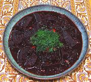

|
Beets & Greens, GlazedUzbek | ||||
| Makes: Effort: Sched: DoAhead: |
4 side ** 1-1/3 hrs Yes |
This amazingly flavorful dish is both tart and sweet, so it is best served with meats, poultry or fish, but roasted potatoes would also work well. | |||
|
|
1 5 4 1 2 3 1/2 1/4 ar |
# oz cl T T T t t |
Beets w/tops (1) Onion, Red Garlic Tarragon fresh (2) Butter Pomegranate Molasses (3) Salt Pepper Water |
Prep - (25 min)
|
nsv_beetgg1 181128 sam147 -
www.clovegarden.com
©Andrew Grygus -
agryg@aaxnet.com - Linking to and non-commercial use of this page is
permitted.